CODING AGENTS AS PIXEL WORLD MODELS
traex/DeepSeek-V4.1-Flash · 0163
点击播放 · 原生 RGB 像素
逐轮保存的候选
回放视频、检查图与代码变化。
每份候选均可单独播放。实际图片检查记录在下方工具轨迹中。
候选 01播放与检查图
点击播放 · 原生 RGB 像素
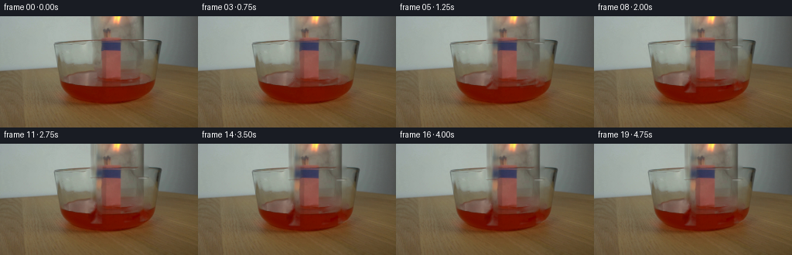
展开代码变化
--- 上一保存版本
+++ 本次保存版本
@@ -0,0 +1,139 @@
+from pathlib import Path
+
+import cv2
+import numpy as np
+from PIL import Image
+
+import artifact_io
+
+
+WIDTH = 256
+HEIGHT = 144
+N_FRAMES = 20
+
+
+def smoothstep(value):
+ value = np.clip(value, 0.0, 1.0)
+ return value * value * (3.0 - 2.0 * value)
+
+
+def build_glass_layers(source):
+ """Separate the visible glass wall and rim from a plausible clean plate."""
+ mask = np.zeros((HEIGHT, WIDTH), dtype=np.uint8)
+
+ # The side walls contain the strongest moving highlights. Keep these bands
+ # away from the central match bundle so its pixels stay stationary.
+ mask[0:92, 116:133] = 255
+ mask[0:92, 178:193] = 255
+
+ # The mouth of the inverted jar is the back and front arcs of this ellipse.
+ rim = np.zeros_like(mask)
+ cv2.ellipse(rim, (145, 80), (31, 7), 0, 0, 360, 255, 3, cv2.LINE_AA)
+ rim[:, 133:159] = 0
+ mask = np.maximum(mask, rim)
+
+ clean = cv2.inpaint(source, mask, 3, cv2.INPAINT_TELEA)
+ soft = cv2.GaussianBlur(mask.astype(np.float32) / 255.0, (5, 5), 1.0)
+ clean = source.astype(np.float32) * (1.0 - soft[..., None]) + clean * soft[..., None]
+
+ residual = (source.astype(np.float32) - clean) * soft[..., None]
+ return clean, residual, soft
+
+
+def shift_layer(layer, dx, dy):
+ matrix = np.float32([[1.0, 0.0, dx], [0.0, 1.0, dy]])
+ return cv2.warpAffine(
+ layer,
+ matrix,
+ (WIDTH, HEIGHT),
+ flags=cv2.INTER_LINEAR,
+ borderMode=cv2.BORDER_REPLICATE,
+ )
+
+
+def animate_flame(frame, time_s, descent):
+ """Add restrained real-time flicker without moving the whole scene."""
+ yy, xx = np.mgrid[0:HEIGHT, 0:WIDTH]
+ radius = np.sqrt(((xx - 149.0) / 12.0) ** 2 + ((yy - 6.0) / 12.0) ** 2)
+ glow = np.exp(-2.6 * radius**2)
+
+ flicker = (
+ 0.030 * np.sin(2.0 * np.pi * 2.7 * time_s + 0.4)
+ + 0.018 * np.sin(2.0 * np.pi * 6.1 * time_s + 1.2)
+ )
+ attenuation = 1.0 - 0.10 * smoothstep((descent - 7.0) / 8.0)
+ warm = np.array([255.0, 174.0, 63.0], dtype=np.float32)
+ frame += glow[..., None] * warm * (flicker * attenuation)
+
+ # A sub-pixel lateral wobble keeps the cropped flame from looking pasted on.
+ sway = 0.45 * np.sin(2.0 * np.pi * 1.65 * time_s + 0.9)
+ flame_mask = np.zeros((HEIGHT, WIDTH), dtype=np.uint8)
+ cv2.ellipse(flame_mask, (149, 5), (10, 8), 0, 0, 360, 255, -1, cv2.LINE_AA)
+ flame_mask = cv2.GaussianBlur(flame_mask.astype(np.float32) / 255.0, (5, 5), 1.1)
+ shifted = shift_layer(frame, sway, 0.0)
+ frame[:] = frame * (1.0 - flame_mask[..., None]) + shifted * flame_mask[..., None]
+ return frame
+
+
+def water_contact(frame, time_s, descent):
+ """A faint meniscus/ripple appears as the jar mouth reaches the liquid."""
+ contact = smoothstep((descent - 4.0) / 5.0)
+ if contact <= 0.0:
+ return frame
+
+ phase = np.clip((time_s - 1.15) / 1.8, 0.0, 1.0)
+ radius_x = 31.0 + 12.0 * phase
+ radius_y = 3.2 + 1.2 * phase
+ ripple = np.zeros((HEIGHT, WIDTH), dtype=np.float32)
+ cv2.ellipse(
+ ripple,
+ (145, 91),
+ (round(radius_x), round(radius_y)),
+ 0,
+ 4,
+ 176,
+ 1.0,
+ 1,
+ cv2.LINE_AA,
+ )
+ ripple = cv2.GaussianBlur(ripple, (3, 3), 0.7)
+ fade = contact * (1.0 - phase) * 0.16
+ frame += ripple[..., None] * np.array([38.0, 10.0, 4.0]) * fade
+ return frame
+
+
+def generate_frames():
+ case_dir = Path(__file__).resolve().parent
+ source = np.asarray(Image.open(case_dir / "first_frame.png").convert("RGB"), dtype=np.uint8)
+ clean, residual, residual_alpha = build_glass_layers(source)
+
+ frames = []
+ for index in range(N_FRAMES):
+ if index == 0:
+ frames.append(source.copy())
+ continue
+
+ time_s = index / 4.0
+ # Lower the inverted jar steadily, then let it settle near the liquid.
+ motion = smoothstep((time_s - 0.10) / 3.70)
+ descent = 15.5 * motion
+ descent += 0.22 * np.sin(2.0 * np.pi * 1.2 * time_s) * smoothstep(time_s / 0.8)
+
+ frame = clean.copy()
+ moved = shift_layer(residual, 0.0, descent)
+ moved_alpha = shift_layer(residual_alpha, 0.0, descent)
+ # Residual pixels already contain the alpha weighting; avoid squaring it
+ # at the edge, while still protecting the central bundle.
+ moved_alpha = np.clip(1.0 - moved_alpha * 0.30, 0.70, 1.0)
+ frame += moved * moved_alpha[..., None]
+
+ frame = animate_flame(frame, time_s, descent)
+ frame = water_contact(frame, time_s, descent)
+ frames.append(np.clip(frame, 0, 255).astype(np.uint8))
+
+ return frames
+
+
+if __name__ == "__main__":
+ output = generate_frames()
+ artifact_io.save(output, Path(__file__).resolve().parent)
候选 02播放与检查图
点击播放 · 原生 RGB 像素
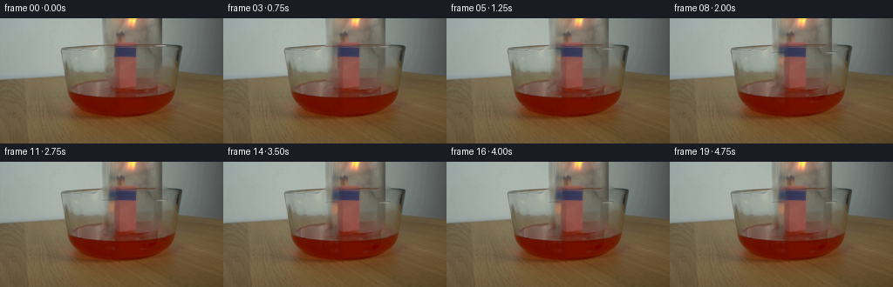
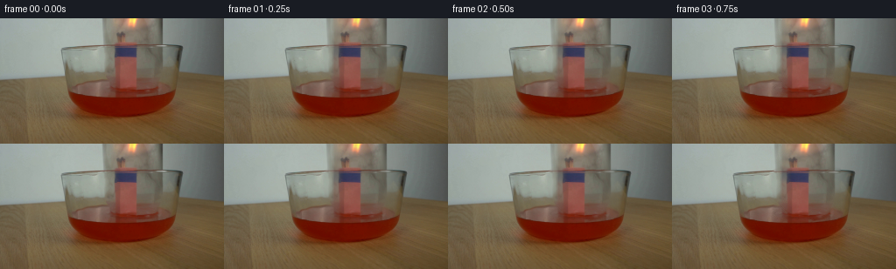
展开代码变化
--- 上一保存版本
+++ 本次保存版本
@@ -23,8 +23,8 @@
# The side walls contain the strongest moving highlights. Keep these bands
# away from the central match bundle so its pixels stay stationary.
- mask[0:92, 116:133] = 255
- mask[0:92, 178:193] = 255
+ mask[0:80, 116:133] = 255
+ mask[0:80, 178:193] = 255
# The mouth of the inverted jar is the back and front arcs of this ellipse.
rim = np.zeros_like(mask)
可观测工具轨迹
实际执行的命令与返回图片。
命令 1exit 0
/bin/bash -c "pwd && rg --files -g 'prompt.txt' -g 'GENERATION_RULES.md' -g 'first_frame.png' -g '"'!node_modules'"' -g '"'!vendor'"'"
命令 2exit 0
/bin/bash -c "git status --short && find . -maxdepth 2 -type f -printf '%p %s bytes\\n' | sort | head -200"
命令 3exit 0
/bin/bash -c 'cat GENERATION_RULES.md'
命令 4exit 0
/bin/bash -c 'cat prompt.txt'
命令 5exit 127
/bin/bash -c "file first_frame.png && python - <<'PY'
from PIL import Image
im=Image.open('first_frame.png')
print(im.size, im.mode)
PY"命令 6exit 0
/bin/bash -c "sed -n '1,240p' artifact_io.py && printf '\\n--- player ---\\n' && sed -n '1,220p' player_template.html"
命令 7exit 0
/bin/bash -c "python - <<'PY'
from PIL import Image
im=Image.open('first_frame.png')
im.resize((1024,576), Image.Resampling.NEAREST).save('.tmp/first_frame_4x.png')
PY"命令 8exit 0
/bin/bash -c "python - <<'PY' mods=['numpy','PIL','cv2','scipy','skimage','imageio','matplotlib'] for m in mods: try: x=__import__(m); print(m, getattr(x,'__version__','ok')) except Exception as e: print(m,'MISSING',e) PY"
命令 9exit 0
/bin/bash -c "python - <<'PY'
from PIL import Image
im=Image.open('first_frame.png')
im.crop((50,0,220,125)).resize((1360,1000), Image.Resampling.LANCZOS).save('.tmp/scene_crop_8x.png')
PY"命令 10exit 0
/bin/bash -c "python - <<'PY'
import cv2, numpy as np
im=cv2.imread('first_frame.png')
g=cv2.cvtColor(im,cv2.COLOR_BGR2GRAY)
e=cv2.Canny(g,20,70)
cv2.imwrite('.tmp/edges.png',e)
# crop edge enlarged
cv2.imwrite('.tmp/edges_crop.png',cv2.resize(e[0:125,50:220],(1360,1000),interpolation=cv2.INTER_NEAREST))
# Color medians rows/cols
for y in [0,10,20,30,40,50,60,70,80,85,90,95,100,105,110,115,120,125,130,140]:
print(y, im[y,5].tolist(), im[y,65].tolist(), im[y,110].tolist(), im[y,120].tolist(), im[y,127].tolist(), im[y,145].tolist(), im[y,160].tolist(), im[y,175].tolist(), im[y,190].tolist(), im[y,210].tolist(), im[y,250].tolist())
PY"命令 11exit 0
/bin/bash -c "python - <<'PY'
from PIL import Image
im=Image.open('first_frame.png')
im.crop((100,0,215,80)).resize((1840,1280), Image.Resampling.NEAREST).save('.tmp/jar_crop_16x.png')
PY"命令 12exit 0
/bin/bash -c "python - <<'PY'
from PIL import Image, ImageDraw, ImageFont
im=Image.open('first_frame.png').resize((1024,576),Image.Resampling.NEAREST)
d=ImageDraw.Draw(im)
for x in range(0,257,10):
X=x*4
d.line((X,0,X,576), fill=(0,255,0), width=1)
if x%20==0: d.text((X+1,2),str(x),fill=(0,255,0))
for y in range(0,145,10):
Y=y*4
d.line((0,Y,1024,Y), fill=(0,255,0), width=1)
if y%20==0: d.text((1,Y+1),str(y),fill=(0,255,0))
im.save('.tmp/grid.png')
PY"命令 13exit 0
/bin/bash -c "python - <<'PY'
from PIL import Image
im=Image.open('first_frame.png')
# closest palette stats in broad masks
import numpy as np
x=np.array(im)
for name,(y0,y1,x0,x1) in {'bg':(0,50,0,70),'jar':(0,70,110,215),'table':(135,144,0,256),'liquid':(95,110,80,190),'flame':(0,45,130,180)}.items():
a=x[y0:y1,x0:x1].reshape(-1,3)
print(name, 'mean',a.mean(0).round(1),'min',a.min(0),'max',a.max(0))
PY"命令 14exit 0
/bin/bash -c "python - <<'PY'
from PIL import Image
import numpy as np
im=np.array(Image.open('first_frame.png'))
# labels by hand: inspect rows around jar region in RGB
for y in range(0,91,5):
print('y',y)
print(' '.join(f'{x}:{tuple(im[y,x])}' for x in range(105,216,5)))
PY"命令 15exit 0
/bin/bash -c 'ls -la && test -f task_spec.json && cat task_spec.json || true'
命令 16exit 1
/bin/bash -c 'python generate.py'
命令 17exit 1
/bin/bash -c 'python generate.py'
命令 18exit 0
/bin/bash -c "python - <<'PY' import cv2, numpy as np x=np.zeros((144,256,1),np.float32) print(cv2.warpAffine(x,np.float32([[1,0,0],[0,1,2]]),(256,144)).shape) PY"
命令 19exit 0
/bin/bash -c 'python generate.py'
命令 20exit 0
/bin/bash -c "python - <<'PY'
from PIL import Image, ImageChops
import numpy as np
src=np.array(Image.open('first_frame.png').convert('RGB'))
f0=np.array(Image.open('frames/00.png').convert('RGB'))
print('frame0 identical:', np.array_equal(src,f0), 'maxdiff', np.abs(src.astype(int)-f0.astype(int)).max())
for i in [1,2,3,5,10,19]:
a=np.array(Image.open(f'frames/{i:02d}.png').convert('RGB'))
d=np.abs(a.astype(int)-src.astype(int))
print(i,'changed',np.count_nonzero(np.any(d>0,axis=2)),'mean',d.mean().round(3),'bbox', end=' ')
ys,xs=np.where(np.any(d>0,axis=2)); print((xs.min(),ys.min(),xs.max(),ys.max()) if len(xs) else None)
# build enlarged strip 0,1,2,5,10,19
ims=[Image.open(f'frames/{i:02d}.png').resize((512,288),Image.Resampling.NEAREST) for i in [0,1,2,5,10,19]]
out=Image.new('RGB',(1536,576))
for j,im in enumerate(ims): out.paste(im,((j%3)*512,(j//3)*288))
out.save('.tmp/frames_strip_2x.png')
PY"命令 21exit 0
/bin/bash -c "python - <<'PY'
from PIL import Image
import numpy as np, cv2
src=np.array(Image.open('first_frame.png').convert('RGB')).astype(np.int16)
for i in [1,5,10,19]:
im=np.array(Image.open(f'frames/{i:02d}.png').convert('RGB')).astype(np.int16)
d=np.abs(im-src).astype(np.uint8)
# amplify 4x
vis=np.clip(d.astype(np.float32)*4,0,255).astype(np.uint8)
Image.fromarray(vis).resize((1024,576),Image.Resampling.NEAREST).save(f'.tmp/diff_{i:02d}.png')
Image.open('frames/19.png').resize((1024,576),Image.Resampling.NEAREST).save('.tmp/frame19_4x.png')
Image.open('frames/10.png').resize((1024,576),Image.Resampling.NEAREST).save('.tmp/frame10_4x.png')
PY"命令 22exit 0
/bin/bash -c "python - <<'PY'
from PIL import Image
import numpy as np
src=np.array(Image.open('first_frame.png'))
for y in [76,78,80,82,84,86,88,90,92,94,96,98,100,102,104,106,108,110]:
# bg / left / center / right / red at x 200 / 220
print(y, 'L',src[y,115].tolist(), 'C',src[y,145].tolist(), 'R',src[y,180].tolist(),'B',src[y,205].tolist())
PY"命令 23exit 0
/bin/bash -c "python generate.py && python - <<'PY'
from PIL import Image
import numpy as np
src=np.array(Image.open('first_frame.png').convert('RGB'))
frames=np.stack([np.array(Image.open(f'frames/{i:02d}.png').convert('RGB')) for i in range(20)])
print('shape',frames.shape,'dtype',frames.dtype,'frame0 exact',np.array_equal(frames[0],src))
for i in range(1,20):
d=np.abs(frames[i].astype(int)-frames[i-1].astype(int))
print(f'{i:02d} mean_delta={d.mean():.3f} changed={np.count_nonzero(np.any(d>0,axis=2))}')
PY"命令 24exit 0
/bin/bash -c "python - <<'PY'
from PIL import Image
for i in [5,10,15,19]:
Image.open(f'frames/{i:02d}.png').resize((1024,576),Image.Resampling.NEAREST).save(f'.tmp/f{i:02d}_4x.png')
PY"命令 25exit 0
/bin/bash -c "python - <<'PY'
from pathlib import Path
import json, re, numpy as np
from PIL import Image
p=Path('.')
frames=sorted((p/'frames').glob('*.png'))
with np.load(p/'pixels.npz') as z:
print('pixels.npz',z['pixels'].shape,z['pixels'].dtype,'packed range',z['pixels'].min(),z['pixels'].max())
print('frame count',len(frames))
print('sizes',sorted(set(Image.open(f).size for f in frames)))
print('modes',sorted(set(Image.open(f).mode for f in frames)))
html=(p/'index.html').read_text()
m=re.search(r'const DATA=(\\{.*?\\}),W=',html,re.S)
data=json.loads(m.group(1))
print('player',data['width'],data['height'],data['frames'],data['fps'],'deltas',len(data['deltas']))
print('first payload chars',len(data['first']))
print('index bytes',(p/'index.html').stat().st_size,'inspection bytes',(p/'inspection.png').stat().st_size)
PY"命令 26exit 0
/bin/bash -c "node --version 2>/dev/null || true; python - <<'PY'
from PIL import Image
import numpy as np
f=[np.array(Image.open(f'frames/{i:02d}.png')) for i in range(20)]
# summarize the jar rim's vertical position using the high blue residual band in x=120..129
for i,a in enumerate(f):
band=a[0:115,119:132].astype(float)
score=(band[:,:,2]-band[:,:,0])
print(i, int(score.max()), round(score.mean(),1))
PY"命令 27exit 0
/bin/bash -c "find . -maxdepth 2 -type f -printf '%p %s\\n' | sort && git status --short -- generate.py frames pixels.npz index.html inspection.png transition_check.png 2>/dev/null || true"
命令 28exit 0
/bin/bash -c "command -v chromium || command -v chromium-browser || command -v google-chrome || true; command -v ffmpeg || true; python - <<'PY'
try:
import playwright
print('playwright python available')
except Exception as e: print('playwright python unavailable')
PY"命令 29exit 130
/bin/bash -c "python - <<'PY'
from pathlib import Path
from playwright.sync_api import sync_playwright
url=Path('index.html').resolve().as_uri()
with sync_playwright() as p:
b=p.chromium.launch(headless=True)
page=b.new_page(viewport={'width':900,'height':420}, device_scale_factor=1)
errors=[]
page.on('pageerror',lambda e: errors.append(str(e)))
page.goto(url,wait_until='load')
page.wait_for_function('window.__pixelReady === true')
print('ready',page.evaluate('window.__pixelReady'),'errors',errors)
page.locator('#seek').fill('19')
page.locator('#seek').dispatch_event('input')
print('time',page.locator('#time').inner_text())
page.screenshot(path='.tmp/player_check.png',full_page=True)
b.close()
PY"命令 30exit 1
/bin/bash -c "python - <<'PY'
from playwright.sync_api import sync_playwright
import time
with sync_playwright() as p:
print('launching',flush=True)
b=p.chromium.launch(headless=True, args=['--no-sandbox','--disable-dev-shm-usage'])
print('launched',flush=True)
page=b.new_page()
page.set_content('<html><body><canvas id=c></canvas></body></html>')
print('page',page.evaluate('1+2'))
b.close()
PY"命令 31exit 1
/bin/bash -c 'mkdir -p .tmp/playwright && TMPDIR="$PWD/.tmp/playwright" XDG_CACHE_HOME="$PWD/.tmp/playwright/cache" python - <<'"'PY'
from pathlib import Path
from playwright.sync_api import sync_playwright
url=Path('index.html').resolve().as_uri()
with sync_playwright() as p:
b=p.chromium.launch(headless=True, args=['--no-sandbox','--disable-dev-shm-usage'])
page=b.new_page(viewport={'width':900,'height':420}, device_scale_factor=1)
errors=[]
page.on('pageerror',lambda e: errors.append(str(e)))
page.goto(url,wait_until='load')
page.wait_for_function('window.__pixelReady === true')
print('ready',page.evaluate('window.__pixelReady'),'errors',errors)
page.locator('#seek').fill('19')
page.locator('#seek').dispatch_event('input')
print('time',page.locator('#time').inner_text())
page.screenshot(path='.tmp/player_check.png',full_page=True)
b.close()
PY"命令 32exit 1
/bin/bash -c "python -m py_compile generate.py artifact_io.py && python - <<'PY'
import json, re
from pathlib import Path
import numpy as np
from PIL import Image
p=Path('.')
src=np.array(Image.open(p/'first_frame.png').convert('RGB'))
frames=np.stack([np.array(Image.open(p/'frames'/f'{i:02d}.png').convert('RGB')) for i in range(20)])
assert frames.shape==(20,144,256,3) and frames.dtype==np.uint8
assert np.array_equal(frames[0],src)
with np.load(p/'pixels.npz') as z:
pixels=z['pixels']
assert pixels.shape==(144,256,20) and pixels.dtype==np.uint32
unpacked=np.stack([(pixels[:,:,i]>>16)&255,(pixels[:,:,i]>>8)&255,pixels[:,:,i]&255],axis=-1).astype(np.uint8)
assert np.array_equal(unpacked,frames)
html=(p/'index.html').read_text()
data=json.loads(re.search(r'const DATA=(\\{.*?\\}),W=',html,re.S).group(1))
assert (data['width'],data['height'],data['frames'],data['fps'])==(256,144,20,4)
assert len(data['deltas'])==19
print('VALID: 20 RGB frames, 256x144, 4 fps, frame 00 exact, packed payload and player consistent')
PY"命令 33exit 1
/bin/bash -c "python -m py_compile generate.py artifact_io.py && python - <<'PY'
import json, re
from pathlib import Path
import numpy as np
from PIL import Image
p=Path('.')
src=np.array(Image.open(p/'first_frame.png').convert('RGB'))
frames=np.stack([np.array(Image.open(p/'frames'/f'{i:02d}.png').convert('RGB')) for i in range(20)])
assert frames.shape==(20,144,256,3) and frames.dtype==np.uint8
assert np.array_equal(frames[0],src)
with np.load(p/'pixels.npz') as z:
pixels=z['pixels']
assert pixels.shape==(144,256,20) and pixels.dtype==np.uint32
unpacked=np.stack([(pixels[:,:,k]>>16)&255,(pixels[:,:,k]>>8)&255,pixels[:,:,k]&255],axis=-1).astype(np.uint8)
assert np.array_equal(unpacked,frames)
html=(p/'index.html').read_text()
data=json.loads(re.search(r'const DATA=(\\{.*?\\}),W=',html,re.S).group(1))
assert (data['width'],data['height'],data['frames'],data['fps'])==(256,144,20,4)
assert len(data['deltas'])==19
print('VALID: 20 RGB frames, 256x144, 4 fps, frame 00 exact, packed payload and player consistent')
PY"命令 34exit 1
/bin/bash -c "python -m py_compile generate.py artifact_io.py && python - <<'PY'
import json, re
from pathlib import Path
import numpy as np
from PIL import Image
p=Path('.')
src=np.array(Image.open(p/'first_frame.png').convert('RGB'))
frames=np.stack([np.array(Image.open(p/'frames'/f'{i:02d}.png').convert('RGB')) for i in range(20)])
assert frames.shape==(20,144,256,3) and frames.dtype==np.uint8
assert np.array_equal(frames[0],src)
with np.load(p/'pixels.npz') as z:
pixels=z['pixels']
assert pixels.shape==(144,256,20) and pixels.dtype==np.uint32
unpacked=np.stack([np.stack([(pixels[:,:,k]>>16)&255,(pixels[:,:,k]>>8)&255,pixels[:,:,k]&255],axis=-1) for k in range(20)],axis=-1).astype(np.uint8)
assert np.array_equal(unpacked,frames)
html=(p/'index.html').read_text()
data=json.loads(re.search(r'const DATA=(\\{.*?\\}),W=',html,re.S).group(1))
assert (data['width'],data['height'],data['frames'],data['fps'])==(256,144,20,4)
assert len(data['deltas'])==19
print('VALID: 20 RGB frames, 256x144, 4 fps, frame 00 exact, packed payload and player consistent')
PY"命令 35exit 1
/bin/bash -c "python - <<'PY'
from pathlib import Path
import numpy as np
from PIL import Image
p=Path('.')
frames=np.stack([np.array(Image.open(p/'frames'/f'{i:02d}.png').convert('RGB')) for i in range(20)])
with np.load(p/'pixels.npz') as z:
pixels=z['pixels']
print(frames.shape,pixels.shape)
unpacked=np.stack([np.stack([(pixels[:,:,k]>>16)&255,(pixels[:,:,k]>>8)&255,pixels[:,:,k]&255],axis=-1) for k in range(20)],axis=-1).astype(np.uint8)
print(unpacked.shape, unpacked.dtype)
d=np.abs(unpacked.astype(int)-frames.astype(int))
print('bad pixels',np.count_nonzero(d),'max',d.max(),'mean',d.mean())
idx=np.argwhere(d)
print(idx[:20])
for q in idx[:5]:
y,x,c,k=q
print(q, frames[y,x,c,k], unpacked[y,x,c,k], pixels[y,x,k])
PY"命令 36exit 0
/bin/bash -c "python - <<'PY'
from pathlib import Path
import numpy as np
from PIL import Image
p=Path('.')
frames=np.stack([np.array(Image.open(p/'frames'/f'{i:02d}.png').convert('RGB')) for i in range(20)])
with np.load(p/'pixels.npz') as z:
pixels=z['pixels']
unpacked=np.stack([np.stack([(pixels[:,:,k]>>16)&255,(pixels[:,:,k]>>8)&255,pixels[:,:,k]&255],axis=-1) for k in range(20)],axis=0).astype(np.uint8)
d=np.abs(unpacked.astype(int)-frames.astype(int))
print('unpacked',unpacked.shape,'bad pixels',np.count_nonzero(d),'max',d.max(),'mean',d.mean())
print('frame0 exact',np.array_equal(frames[0],np.array(Image.open(p/'first_frame.png').convert('RGB'))))
PY"命令 37exit 0
/bin/bash -c "python -m py_compile generate.py artifact_io.py && python - <<'PY'
import json, re
from pathlib import Path
import numpy as np
from PIL import Image
p=Path('.')
src=np.array(Image.open(p/'first_frame.png').convert('RGB'))
frames=np.stack([np.array(Image.open(p/'frames'/f'{i:02d}.png').convert('RGB')) for i in range(20)])
assert frames.shape==(20,144,256,3) and frames.dtype==np.uint8
assert np.array_equal(frames[0],src)
with np.load(p/'pixels.npz') as z:
pixels=z['pixels']
assert pixels.shape==(144,256,20) and pixels.dtype==np.uint32
unpacked=np.stack([np.stack([(pixels[:,:,k]>>16)&255,(pixels[:,:,k]>>8)&255,pixels[:,:,k]&255],axis=-1) for k in range(20)],axis=0).astype(np.uint8)
assert np.array_equal(unpacked,frames)
html=(p/'index.html').read_text()
data=json.loads(re.search(r'const DATA=(\\{.*?\\}),W=',html,re.S).group(1))
assert (data['width'],data['height'],data['frames'],data['fps'])==(256,144,20,4)
assert len(data['deltas'])==19
print('VALID: 20 RGB frames, 256x144, 4 fps, frame 00 exact, packed payload and player consistent')
PY"命令 38exit 0
/bin/bash -c "python - <<'PY'
from PIL import Image
import numpy as np
src=np.array(Image.open('first_frame.png').convert('RGB'))
frames=np.stack([np.array(Image.open(f'frames/{i:02d}.png').convert('RGB')) for i in range(20)])
# Changes outside the intended jar/flame zone
roi=np.ones((144,256),bool); roi[0:112,105:205]=False
for i in [1,5,10,15,19]:
d=np.any(frames[i]"'!=src,axis=2)
print(i,'"'outside_roi_changed',int(np.count_nonzero(d & roi)))
# Ensure no duplicated output frames
print('unique consecutive frames',sum(not np.array_equal(frames[i],frames[i-1]) for i in range(1,20)),'/19')
PY"命令 39exit 0
/bin/bash -c "find __pycache__ .tmp/playwright -maxdepth 2 -type f -delete 2>/dev/null || true; find __pycache__ .tmp/playwright -depth -type d -empty -delete 2>/dev/null || true; ls -la | sed -n '1,80p'"
命令 40exit 0
/bin/bash -c "find .tmp/playwright -maxdepth 3 -printf '%y %p\\n' 2>/dev/null | head -30"
命令 41exit 0
/bin/bash -c "find .tmp -maxdepth 2 -type d -empty -delete; find .tmp -maxdepth 1 -type f -printf '%f\\n' | sort | tail -30"
命令 42exit 0
/bin/bash -c 'git status --short -- .'
视觉工具实际返回图片 1
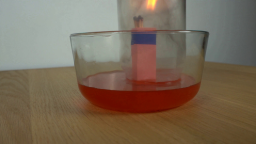
视觉工具实际返回图片 2
视觉工具实际返回图片 3
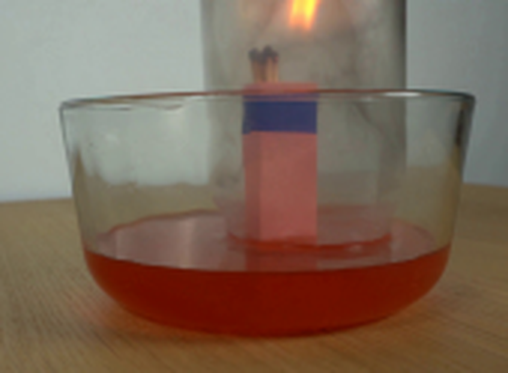
视觉工具实际返回图片 4
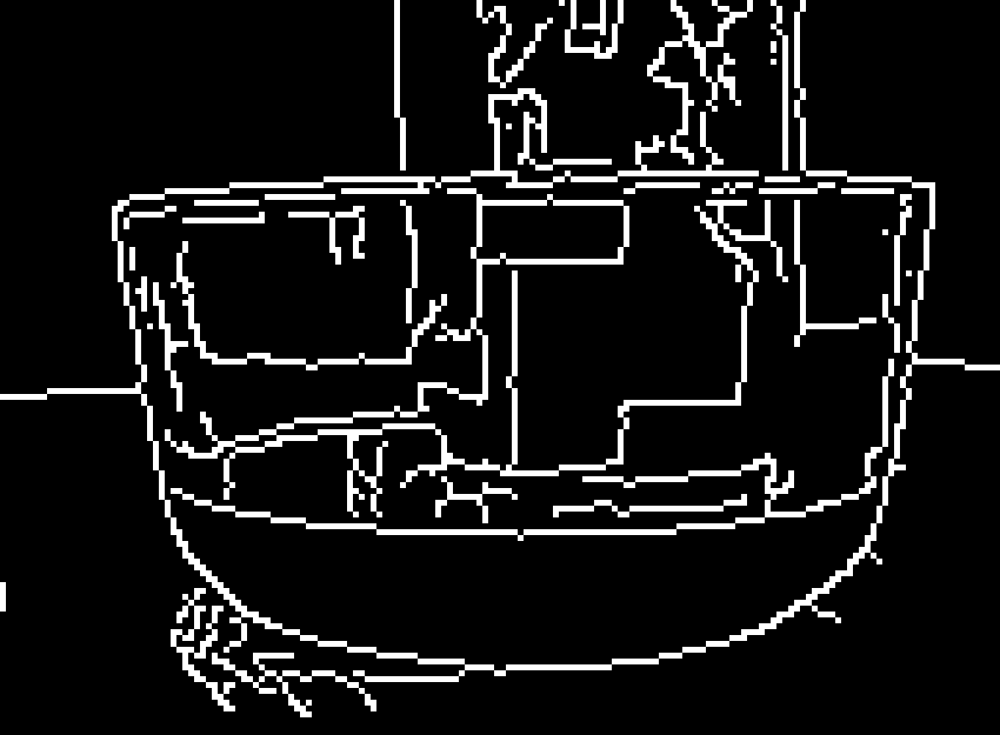
视觉工具实际返回图片 5
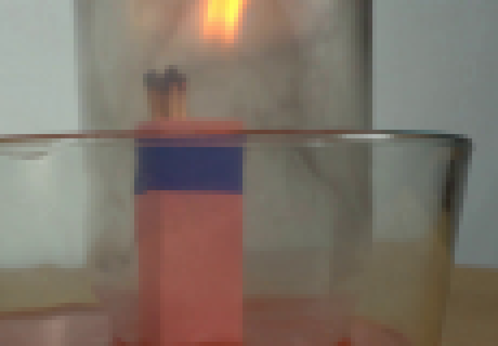
视觉工具实际返回图片 6
视觉工具实际返回图片 7

视觉工具实际返回图片 8
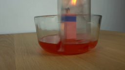
视觉工具实际返回图片 9
视觉工具实际返回图片 10
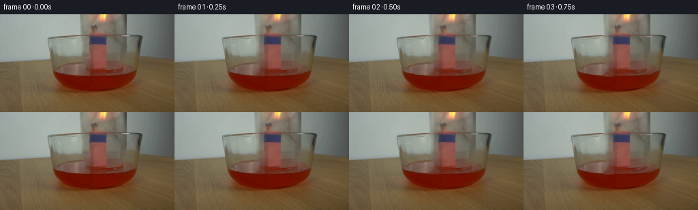
视觉工具实际返回图片 11
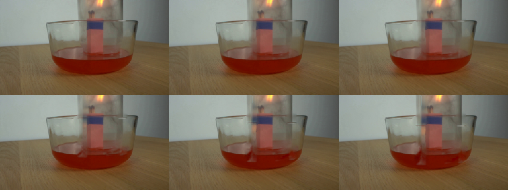
视觉工具实际返回图片 12
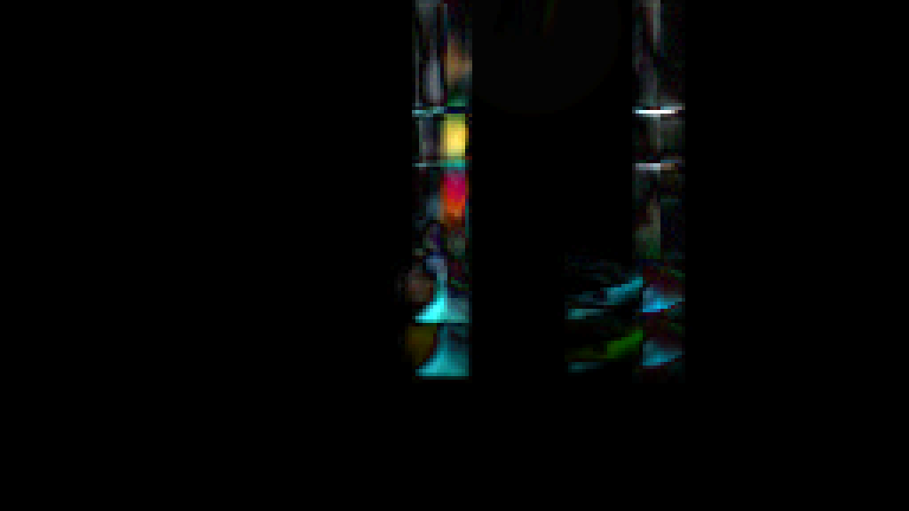
视觉工具实际返回图片 13
视觉工具实际返回图片 14
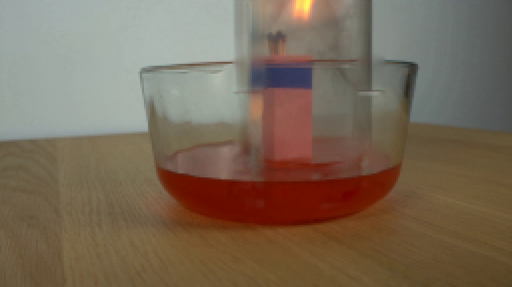
视觉工具实际返回图片 15
保存候选 2 份；完成命令 42 次；可验证图片返回 15 张。原始 API 响应与完整日志保留在本地。